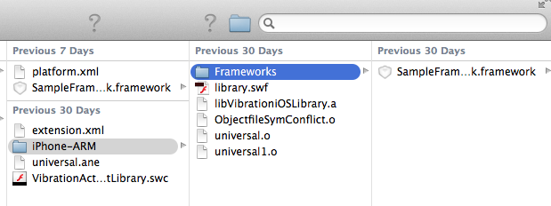

You can use a platform options (platform.xml) file to specify
iOS-specific options for linking to additional frameworks and libraries
or for bundling third-party frameworks or libraries in your native
extension. The platform options file is added to the ANE when you
package the extension by specifying the
-platformoptions
flag
after the
-platform
flag for iOS. Later, when a developer
creates an application IPA file that uses your extension, ADT uses
the options in the platform.xml file to link to the additional libraries
and include the bundled dependencies.
Note:
The platform options file can have any name. You are not required
to name it “platform.xml.”
You can use an iOS platform options file with both the iPhone-ARM
(device) and iPhone-x86 (iOS simulator) platforms.
Platform options files require AIR 3.1 or later.
When using the
packagedDependencies
feature for packaging
the ANE for iOS, add
<option>-rpath @executable_path/Frameworks</option>
inside the
linkerOptions
tag, in
platformoptions.xml
.
iOS linker options
The iOS linker options
provides a way for you to pass arbitrary options to the linker.
The specified options are passed unchanged to the linker. You can
use this to link to additional frameworks and libraries, such as
additional iOS frameworks. To specify linker options, use the
<linkerOptions>
tag
in the platform options xml file. Inside the
<linkerOptions>
tag,
specify each linkage option wrapped in an
<options>
tag
pair, as shown in the following example:
<linkerOptions>
<option>-ios_version_min 5.0</option>
<option>-framework Accelerate</option>
<option>-liconv</option>
</linkerOptions>
Any dependency linked in this
way must be distributed to developers who use your native extension
separate from the native extension itself. This is most useful for
using an additional library included with iOS but not linked by
AIR by default. You can also use this option to allow developers
to link to a static library that you provide them separately.
The
<linkerOptions>
tag
requires AIR 3.3 or later.
Packaged third-party dependencies
In some
cases you want to use a static library (for example, a native third-party library)
in your native extension without having access to the source code
for the library, or without requiring developers to have access
to the library separate from your extension. You can bundle the
static library with your native extension by specifying it as a
packaged dependency. Use the
<packagedDependencies>
tag
in the platform options xml file. For each dependency that you want
to include in the extension package, specify its name or relative
path surrounded in a
<packagedDependency>
tag
pair, as shown in the following example:
<packagedDependencies>
<packagedDependency>foo.a</packagedDependency>
<packagedDependency>abc/x.framework</packagedDependency>
<packagedDependency>lib.o</packagedDependency>
</packagedDependencies>
A packaged dependency
should be a static library with one of the following extensions:
.a
,
.framework
,
or
.o
. The library should support the ARMv7 architecture
to be used on a device, and the i386 architecture for use with the
iOS simulator.
When packaging the native extension, you must
specify the names of the dependencies as parameters to the
-platformoptions
flag.
List the dependencies after the filename of the platform.xml file
and before any following
-package
flag, as shown
in the following example:
adt -package <signing options> -target ane MyExtension.ane MyExt.xml -swc MyExtension.swc
-platform iPhone-ARM -platformoptions platformiOSARM.xml
foo.a abc/x.framework lib.o -C platform/ios .
-platform iPhone-x86 -platformoptions platformiOSx86.xml
-C platform/iosSimulator
-platform default -C platform/default library.swf
The
<packagedDependencies>
tag
requires AIR 3.5 or later.
Using private embebbed frameworks
To create
iOS ANEs with Xcode6 or later, using private frameworks:
-
Edit platform.xml to add
<option>-rpath @executable_path/Frameworks</option>
inside
the the
linkerOptions
tag.
For example,
</description>
<linkerOptions>
<option>-ios_version_min 5.1.1</option>
<option>-rpath @executable_path/Frameworks</option>
</linkerOptions>
<packagedDependencies>
<packagedDependency>SampleFramework.framework</packagedDependency>
</packagedDependencies>
-
Create a folder named, Frameworks, inside the existing iPhone-ARM
folder .
-
Copy the private framework to the Frameworks folder and package
the framework with the ANE.

Copy private framework
Platform options (platform.xml) file example
The
following listing shows an example of the structure of a platform
options (platform.xml) file:
<platform xmlns="http://ns.adobe.com/air/extension/3.5">
<description>An optional description.</description>
<copyright>2011 (optional)</copyright>
<sdkVersion>5.0.0</sdkVersion>
<linkerOptions>
<option>-ios_version_min 5.0</option>
<option>-framework Accelerate</option>
<option>-liconv</option>
</linkerOptions>
<packagedDependencies>
<packagedDependency>foo.a</packagedDependency>
<packagedDependency>abc/x.framework</packagedDependency>
<packagedDependency>lib.o</packagedDependency>
</packagedDependencies>
</platform>
To include this platform options
file in the native extension package, you can use an ADT command
such as the following:
adt -package <signing options> -target ane MyExtension.ane MyExt.xml -swc MyExtension.swc
-platform iPhone-ARM -platformoptions platformiOSARM.xml
foo.a abc/x.framework lib.o -C platform/ios .
-platform iPhone-x86 -platformoptions platformiOSx86.xml
-C platform/iosSimulator
-platform default -C platform/default library.swf